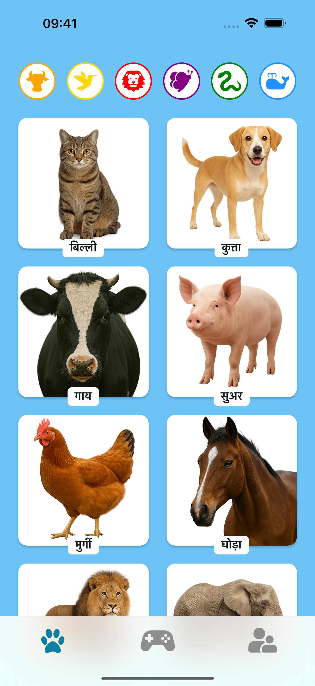
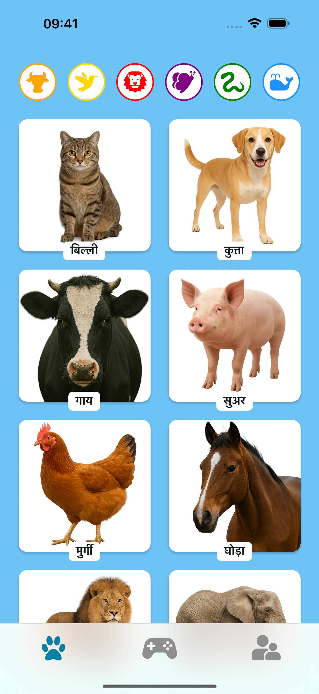
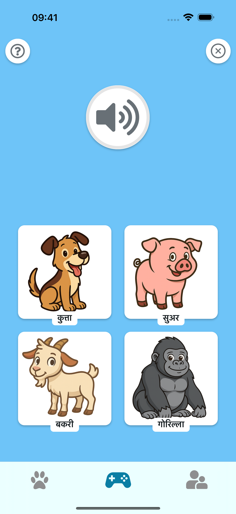

🎵 सुनकर सीखें
असली आवाजें सुनने के लिए जानवरों पर टैप करें। प्रारंभिक भाषण, स्मृति और मजेदार पारिवारिक क्षणों के लिए बिल्कुल सही!
 

🧠 खेलें और अनुमान लगाएं
ध्यान से सुनें और सही जानवर चुनें! एक सरल क्विज़ मोड बच्चों को आवाजों को पहचानना और जानवरों को आसानी से याद रखना सीखने में मदद करता है।
🌍 सुरक्षित और बच्चों के अनुकूल
कोई विज्ञापन नहीं। कोई ट्रैकिंग नहीं। केवल रंगीन जानवर, दोस्ताना आवाजें और एक साथ खुशी का सीखने का समय।